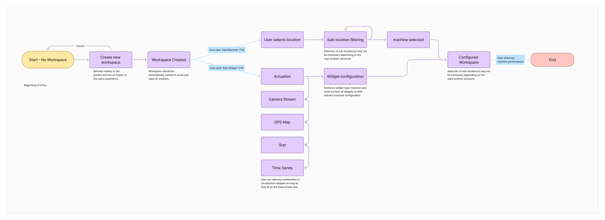

Viam TeleOp
Remote sensor visibility and control in real time

Overview
Many companies lack real-time visibility into their machines due to fragmented systems, outdated hardware, and inconsistent data standards. These gaps make it difficult to detect issues early, integrate insights, or respond quickly, especially in remote or infrastructure-poor environments.
Problem
While Viam could collect data from a wide range of input sources and expose it through the UI and exports, the information was fragmented and difficult for users to interpret or act on effectively.
Goals
- 👁️ Enable real-time visibility into robot sensor states
- ↔️ Support bi-directional control for developers and operators
- 📶 Standardize telemetry UI for machine health
- ğŸ› ï¸ Reduce tooling fatigue by consolidating multiple dashboards
Process
Research & Discovery
I conducted interviews with internal stakeholders (product, engineering, support) and shadowed solutions engineers during real machine setup. I also benchmarked tooling from competitors like Arduino and Datadog. These efforts revealed a common theme: while the platform surfaced vast amounts of sensor data, users lacked the context or structure to interpret it confidently. Developers wanted tools that felt native to their workflow, familiar layouts, responsive controls, and streamlined diagnostics.
Competitive Analysis
- Arduino
Prioritize real-time device status but lack detailed sensor state correlation. - Datadog
Excels at observability but is built around server monitoring rather than physical robotics. - Opportunity
A robotics-native UI that balances live status, control, and machine health.

Arduino IoT dashboard: Device-centric, but not built for robotic sensor workflows.
Datadog: Excellent for server observability, less intuitive for machine telemetry.
Key Insights
📈 Sensor data was available, but not actionableUsers were overwhelmed by raw data streams and needed a way to correlate sensor states with system behavior.
🮠Developers wanted control + clarity
Solutions engineers expected joystick-like control with immediate feedback, while devs wanted a way to simulate/test remotely.
🧩 Tooling fatigue was real
Many users jumped between multiple dashboards, logs, and command-line tools. They wanted a unified environment.
🧠Familiar patterns helped adoption
Using VS Code-like UI structures (e.g. tabbed panels, left-hand nav) reduced ramp-up time and made TeleOp feel “native” to their workflow.
Design Approach
Flow Map
I mapped out the core user journeys for different personas, including solutions engineers and developers. Early flows prioritized quick access to machine status, streamlined manual control interactions, and fallback paths for degraded network environments.
Wireframes
Low-fidelity wireframes tested different structural models: tabbed dashboards, collapsible sensor panels, and split-view layouts combining control and telemetry. Wireframes helped validate navigation hierarchy and the balance between overview and detail views.
Iterations
Through rounds of feedback and internal testing, we refined the UI to prioritize actionability — surfacing the most critical sensor states first and simplifying manual overrides. Design iterations also focused on making the dashboard feel responsive even under slower network conditions, improving trust during remote operations. Side panel for configuration of widgets instead of an edit mode
Need to create a new workspace from an existing machine
Sensor Feeds (LiDAR, Camera, GPS)
Live Dashboard (Sensor Monitoring)
Manual Control Panel (Remote Actions)
Diagnostics & Health Reporting
Key Functionality
Adding Widgets
Centralized view of visual, spatial, and diagnostic sensor data for live machine monitoring.
Adding a machine
Centralized view of visual, spatial, and diagnostic sensor data for live machine monitoring.
Widget configuration
Modular setup for selecting, arranging, and customizing live data and control widgets across the dashboard.
Machine monitoring
Centralized view of visual, spatial, and diagnostic sensor data for live machine monitoring.
Outcomes
- 📠$2.75M in signed contracts from early enterprise users
- 🤠6partnerships
- ğŸ› ï¸ Improved uptime and operational safety for fleet operators
Reflections
What Went Well
- 📈 Higher engagement across both business and consumer customers.
- 🛒 Increased customer conversion through clearer telemetry visibility.
- 🤠Reduced support effort for our solutions engineering team.
- 🧠Improved developer comfort and ease-of-use inside the app.
- ⚡ Faster task completion times for operators and engineers.
- ğŸ› ï¸ Successfully integrated long-standing backlog items that had been blocked.
Areas for Improvement
- ⏳ Overall time to develop and launch could be reduced.
- 🚀 A phased launch approach would have accelerated delivery and feedback loops.
- 🨠Simultaneous development of the design system slowed product velocity.
- ⚖️ Balancing organization-wide demands with deep project work proved challenging.